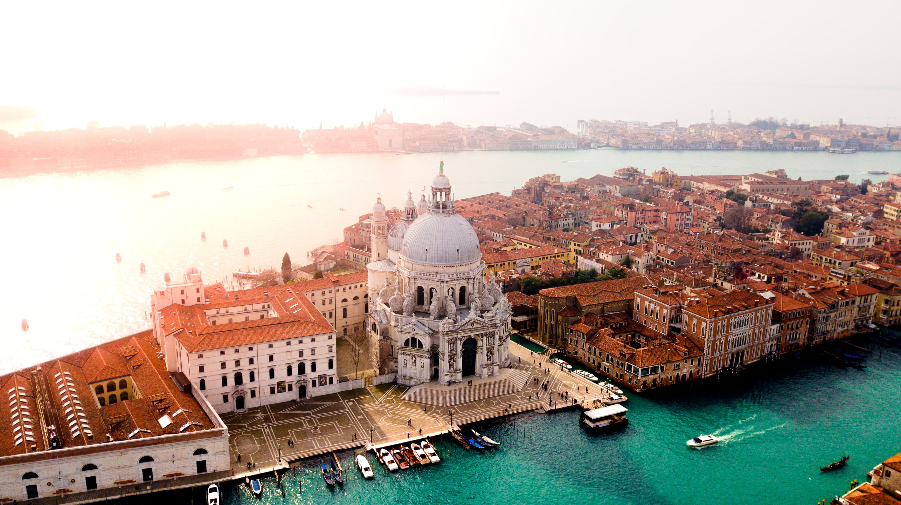
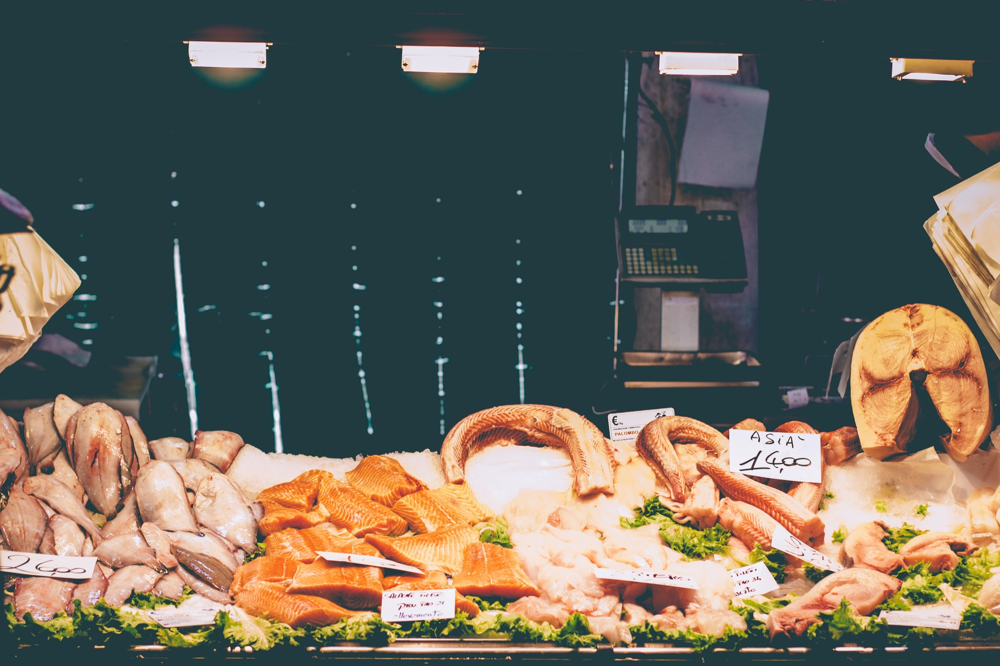
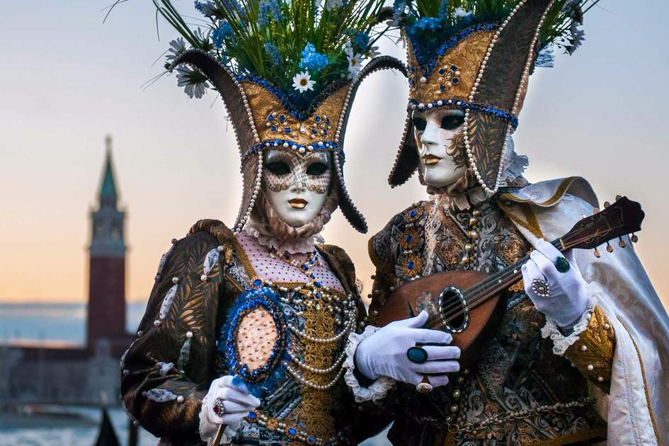

History
Venice is known as a "City of Canal". 124 small islands consist the city. It was formed in the 6th century C.E. so there are many historical buildings. Venice itself and lagoon are the World Heritage Site.
Go to History Page

Food
Venice is literally built on the water, so its seafood is the highest quality. Many seafood disses in Venice are influenced by Middle Eastern cuisine.
Go to Food Page

Festival
City of Venice has a lot of festivals started hundreds of years ago. You can see some fireworks and masquerades. I bet you would be like.
Go to Festival Page